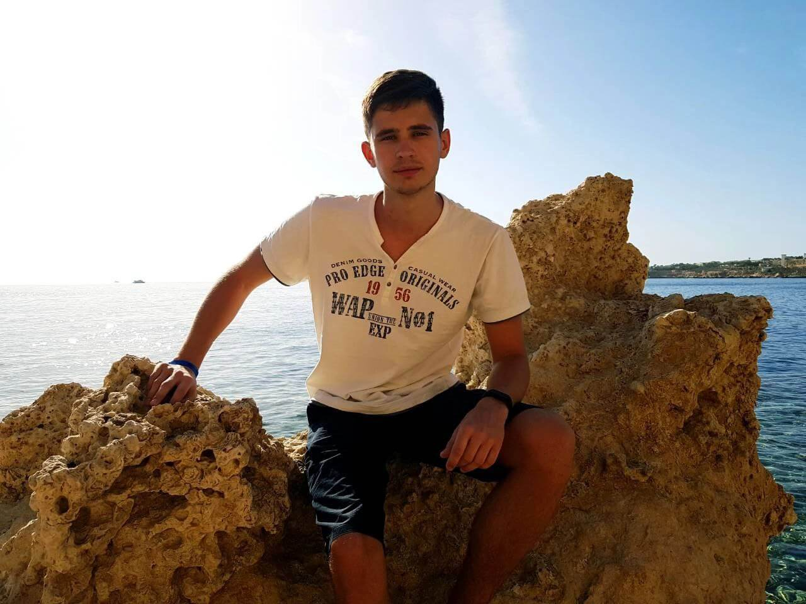

Some words about myself... I've graduated Belarusian State
Technological University in 2021, went through the army and worked as
a designer in the chemical industry for one year. I start thinking
about programming 2 years ago but start learning right after army. Now
I've almost a year of experiance in web-programming and I realy enjoy
this profession. What you really need to know about me is that I
always reach my goal, and right now that goal is to be a good IT
specialist. My hobbies are sport, travelling, computer games and the
new one - writting code.